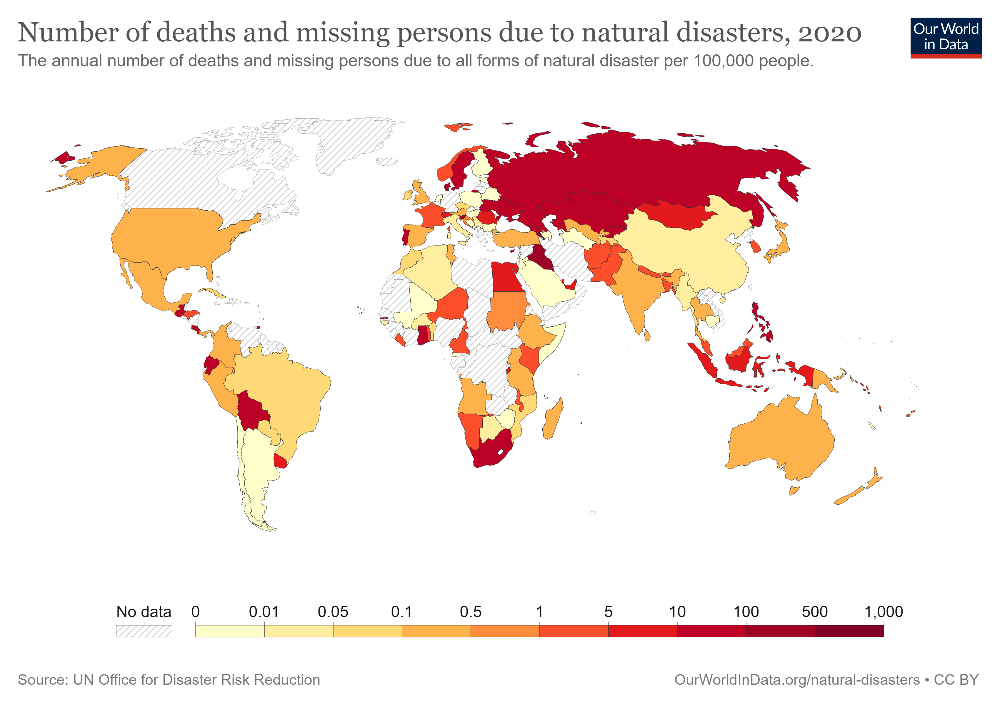

SDG 11, Indicator 5.1 aims to reduce the number of deaths caused by disasters, recognizing the devastating impact that natural disasters can have on communities and individuals.
Solutions that have been proposed include disaster preparedness plans, early warning systems, and community-based disaster risk reduction programs.
Many countries, NGOs, and companies around the world have taken steps towards reducing disaster-related deaths.
For example, Japan has implemented a nationwide early warning system for earthquakes, and the Red Cross works to provide disaster preparedness training to communities.
Companies such as IBM have developed predictive analytics tools to help identify areas at risk and improve disaster response.
It is essential to continue efforts to reduce disaster-related deaths to ensure the safety and well-being of communities around the world.
